La afirmación no procede de un severo crítico de cine , sino de un chico de 16 años , llegado desde Miami.
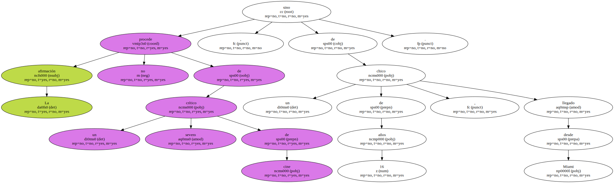- Me parece formidable que la organización haya decidido que este año vengan también chicos y chicas de otras creencias - , afirma su hermana.
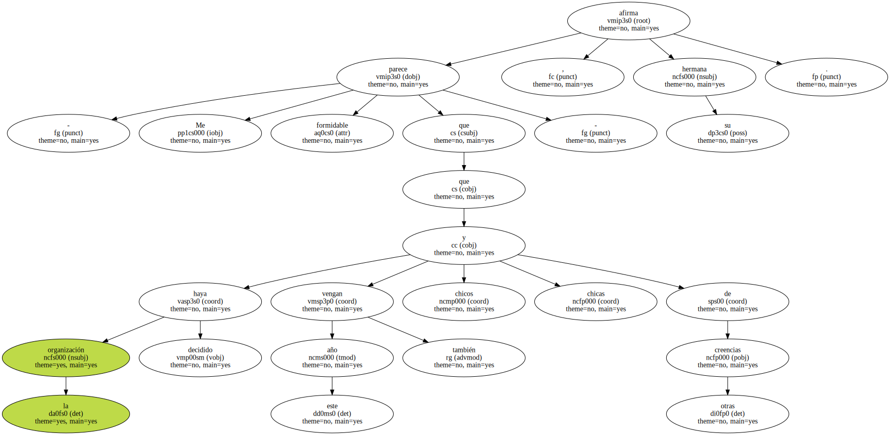Algo más alegre que el resto del grupo , la joven se muestra menos exigente respecto a la película de Spielberg , e incluso sugiere que - no hubiese estado mal que en Birkenau , en lugar de la solemne ceremonia hubiesen puesto la película.
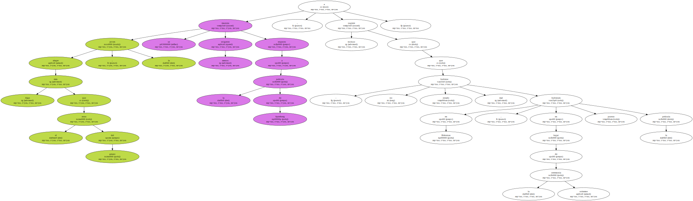Un grupo de espontáneos llegados por sorpresa - es decir , ajenos a la organización y sin su correspondiente chándal azul - intenta unirse a la comitiva.
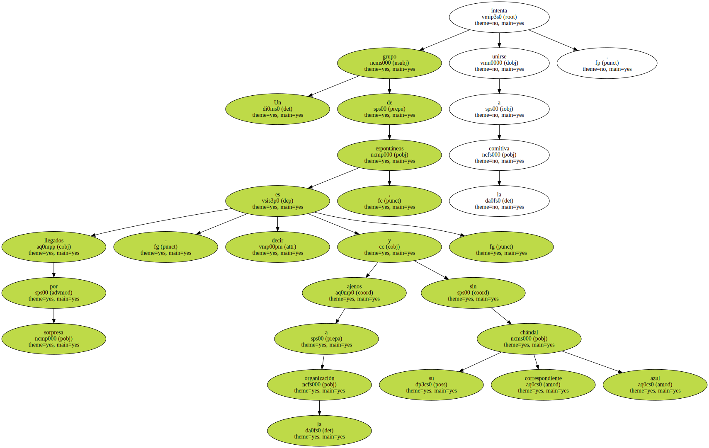No lo tienen fácil : la presencia de los vigilantes de - plantilla - del museo se ha visto reforzada hasta la exageración por una legión de policías que custodia cada bocacalle , cada acceso a esta pequeña ciudad en la que pocos , muy pocos , quisieran vivir , a la sombra del Holocausto.

El motivo de tales medidas de seguridad son los - ministros - , como decía uno de los organizadores.
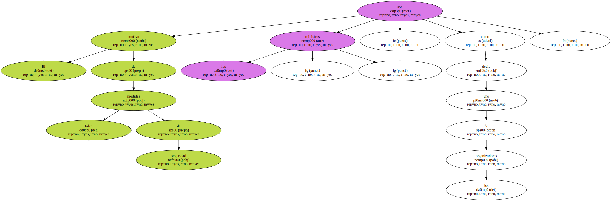Este año la cabecera de la marcha tuvo que multiplicarse para dar cabida al invitado de honor - el presidente de Uruguay , primer país que reconoció oficialmente al Estado de Israel - , así como una delegación de Tel Aviv , representación institucional polaca y los inevitables e interminables séquitos respectivos.
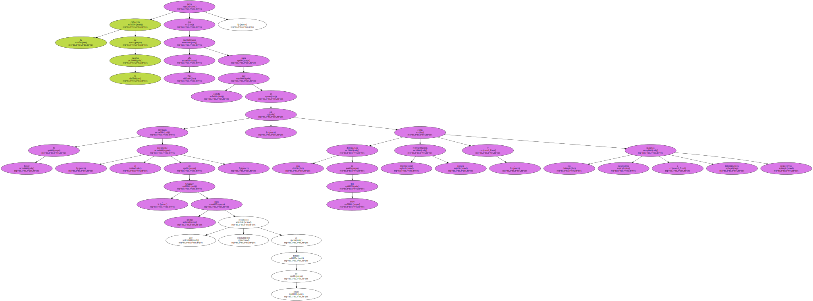En Birkenau , junto al destruido crematorio , empieza la ceremonia solemne y los discursos.
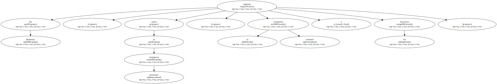Jacques Stromza , el violinista de Auschwitz , regresó a Polonia a sus 80 años , procedente de Israel , para hacer hacer sonar su música junto al portalón del Campo de la Muerte.
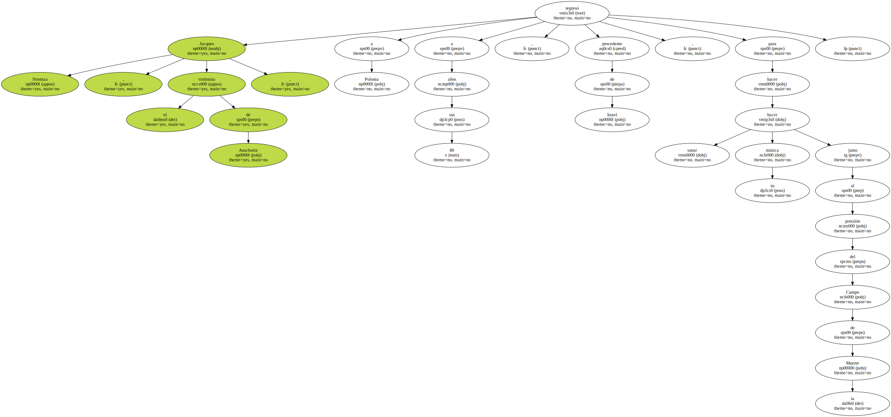Ocho años en el monte , para que al final todo quede reducido a unas campanas - , alguien hacía este comentario socarrón mientras algunos de los ex combatientes de la Corriente de Renovación Socialista entregaban sus armas a Fabio Villegas Rodríguez , ministro de Gobernación de Colombia.
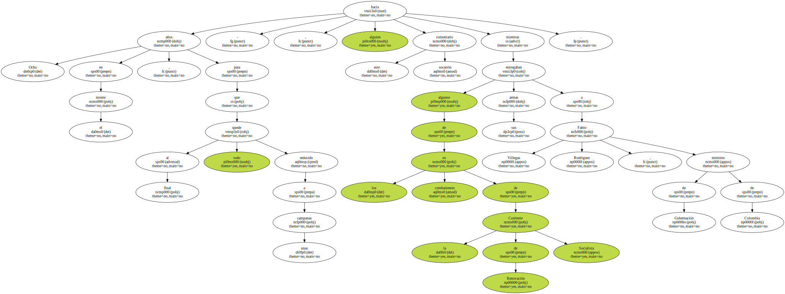Era la quinta vez en la historia de Colombia en que un grupo guerrillero decidía entregar sus armas para convertirse en organización política e integrarse en la vida civil.

Los fusiles , las ametralladoras , granadas y buena parte de los artefactos que los guerrilleros del CRS que se han usado para luchar contra el Ejército colombiano que serán convertidas en campanas para las parroquias del municipio Sucre.
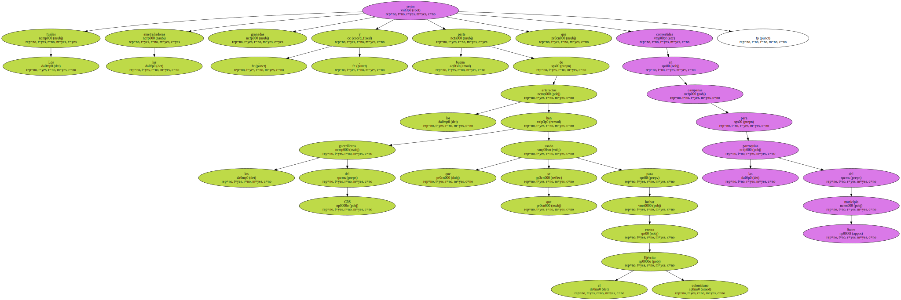Algunos de los guerrilleros o milicianos ( de Milicias Urbanas que se dedican a poner orden en los barrios de las grandes ciudades de Colombia ) aprovechaban la paga recién salida de manos del gobierno - 170.000 pesos mensuales , ( unas 23.000 pesetas mensuales ) - para acabar con las reservas de aguardiente antioqueño y cerveza - Polar - , en el bar del pueblo y celebrar por todo lo alto - la vuelta a la vida civil - declaraba uno de ellos - ; después de cinco años en el monte , se cansa uno de andar siempre huyendo.

Tengo ganas de volver a casa y llevar una vida más tranquila ; con las armas no hemos conseguido lo que queríamos , a ver si con la palabra podemos -.
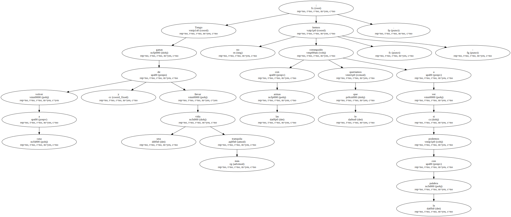Otros también bebían , pero para aturdirse , para olvidar su mala suerte : - En el acuerdo se incluyen a 430 compañeros , pero quedamos otros 50 a los que no nos dan dinero , ni ropa civil , ni nada ... a ver qué hago yo ahora si no tengo ni un centavo -.
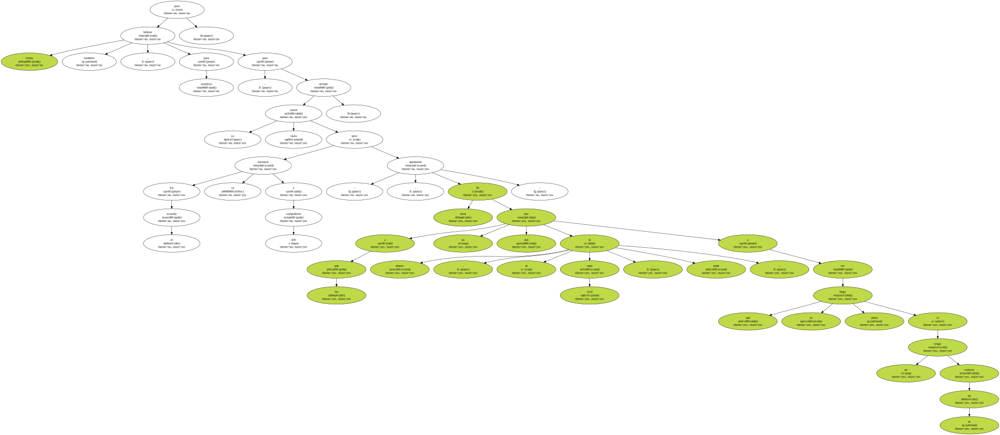- Los milicianos que viven en ciudades lo tienen más claro , porque seguirán haciendo lo mismo , manteniendo el orden en las calles pero de forma legal , con una cooperativa - , dice otro.
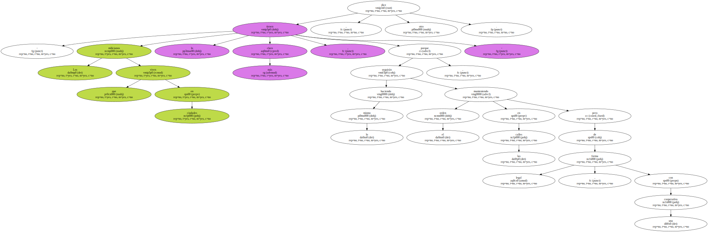